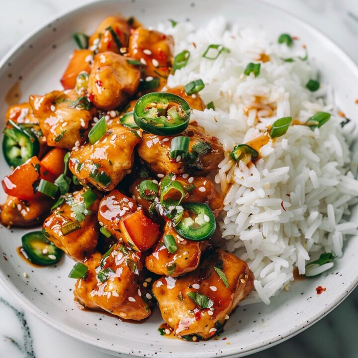
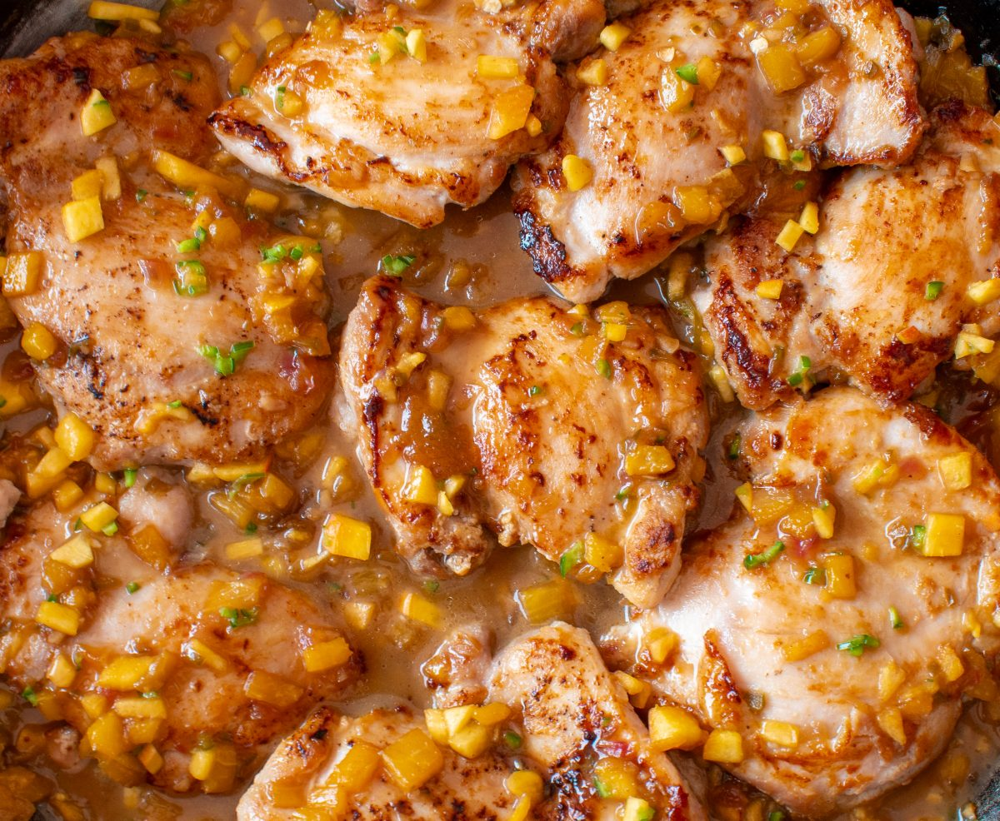
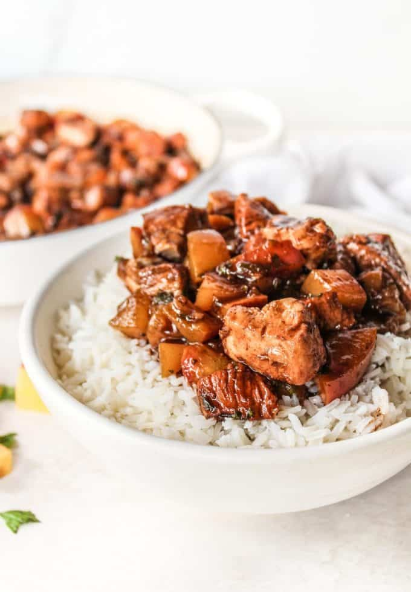

<html></html>
<head>
    <title>recipe</title>
    <meta name="viewport" content="width=device-width, initial-scale=1">
    <link rel="stylesheet" href="recipesty.css">
    <link rel="stylesheet" href="https://fonts.googleapis.com/css?family=Zain|ABeeZee|Inter">
</head>
<body>
    <div class="header">
        <h1>Flavor Fusion</h1>
    </div>
    <div class="navbar">
        <ul>
            <li><a href="frontpage.html">Home</a></li>
            <li><a href="category1.html">Appetizers</a></li>
            <li><a href="category2.html">Main Courses</a></li>
            <li><a href="category3.html">Desserts</a></li>
        </ul>
    </div>
    <div class="name">
        <p style="font-size: 250%;">Peach Jalapeño Chicken</p>
    </div>

    <div class="scrolling-gallery">
        
        
        
        
    </div>

    <div class="desc">
        <div class="descinfo">
            <p>
                This peach jalapeño chicken is a sweet, fruity, spicy dish made in one skillet, another quick way to cook boneless chicken breast. Serve over rice.
            </p>
        </div>

        <div class="time">
            
            <br> Total Time: 30 min
        </div>

        <div class="flip-card">
            <div class="flip-card-inner">
              <div class="flip-card-front">
                
                <br>
                Nutritional information
              </div>
              <div class="flip-card-back">
                <p>
                    Serving size: 1 of 6<br>
                    Calories: 276<br>
                    Total fat: 7g<br>
                    Carbs: 33g<br>
                    Sugar: 23g<br>
                    Protein: 20g<br>
                    Cholesterol: 51mg<br>
                    Sodium: 591mg<br>
                </p>
              </div>
            </div>
          </div>
        
    </div>

    <div class="bottom">
        <div class="ingredients">
            <h2 style="text-align: center;">Ingredients</h2>
            <hr class="divider" style="width: 70%">
            <div class="checkbox">
                <form>

                    <p>
                        <input type="checkbox" name="ingredients" class="strikethrough">
                        <label>2 tablespoons olive oil<br></label>
                    </p>
		    <p>
                        <input type="checkbox" name="ingredients" class="strikethrough">
                        <label>3 skinless boneless chicken breasts, diced<br></label>
                    </p>
		    <p>
                        <input type="checkbox" name="ingredients" class="strikethrough">
                        <label>1 teaspoon sea salt<br></label>
                    </p>
		    <p>
                        <input type="checkbox" name="ingredients" class="strikethrough">
                        <label>1 teaspoon freshly ground black pepper<br></label>
                    </p>
		    <p>
                        <input type="checkbox" name="ingredients" class="strikethrough">
                        <label>1 teaspoon smoked paprika<br></label>
                    </p>
		    <p>
                        <input type="checkbox" name="ingredients" class="strikethrough">
                        <label>1 teaspoon onion powder<br></label>
                    </p>
		    <p>
                        <input type="checkbox" name="ingredients" class="strikethrough">
                        <label>1 teaspoon garlic powder<br></label>
                    </p>
		    <p>
                        <input type="checkbox" name="ingredients" class="strikethrough">
                        <label>1 tablespoon chili powder<br></label>
                    </p>
		    <p>
                        <input type="checkbox" name="ingredients" class="strikethrough">
                        <label>1 jalapeno, seeded and diced<br></label>
                    </p>
		    <p>
                        <input type="checkbox" name="ingredients" class="strikethrough">
                        <label>2 peaches - peeled, pitted, and diced<br></label>
                    </p>
		    <p>
                        <input type="checkbox" name="ingredients" class="strikethrough">
                        <label>1/2 cup peach preserves<br></label>
                    </p>
		    <p>
                        <input type="checkbox" name="ingredients" class="strikethrough">
                        <label>2 tablespoons soy sauce<br></label>
                    </p>
		    <p>
                        <input type="checkbox" name="ingredients" class="strikethrough">
                        <label>1 tablespoon apple cider vinegar<br></label>
                    </p>
		    <p>
                        <input type="checkbox" name="ingredients" class="strikethrough">
                        <label>1 tablespoon cornstarch<br></label>
                    </p>
		    <p>
                        <input type="checkbox" name="ingredients" class="strikethrough">
                        <label>cilantro, fresh or dried, for garnish (optional)<br></label>
                    </p>

                    
                </form>
             </div>
        </div>        

        <div class="instructions">
            <h2 style="text-align: center;">Instructions</h2>
            <hr class="divider">
            <div class="steps">
                <ol type="1">
                    <li>Heat olive oil in a large skillet over medium heat until hot, about 2 minutes.</li><br>
	<li>Season chicken with salt, pepper, smoked paprika, onion powder, garlic powder, and chili powder. Add chicken breast to the hot skillet; cook chicken until no longer pink at the center and juices run clear, about 5 minutes. Remove chicken to a bowl; set aside.</li><br>
	<li>Add peaches and jalapeño to the same skillet; cook until peaches soften, 5 to 6 minutes.</li><br>
	<li>In a small bowl, whisk together peach preserves, soy sauce, apple cider vinegar, and cornstarch until well combined. Set aside.</li><br>
	<li>Return cooked chicken to the skillet and stir in peach preserves mixture, making sure to coat chicken and peaches well. Continue to cook, stirring, until sauce thickens, about 2 minutes.</li><br>
	<li>Garnish with fresh or dried cilantro when serving.</li><br>
                </ol>
            </div>
        </div>
    </div>
</body>
</html>